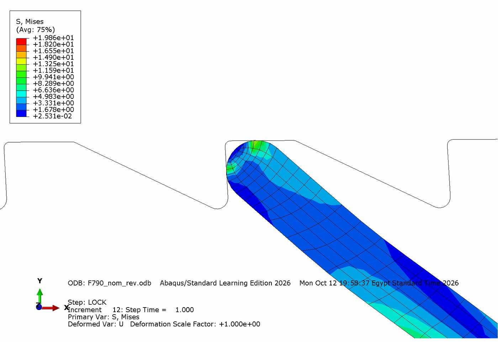

Research Assistant, Micro Linear Actuators · AUC · 2026–
Ratchet pawl design search
A tiny 3D-printed resin pawl has to lock the actuator and survive the load. I automated the search: over 3,000 designs tested by FEA, and 20 that pass every check.
Software Abaqus + PythonMaterial 3D-printed resinDesigns tested 3,000+

What it is
The research project builds small linear actuators driven by shape memory alloys (SMA), wires that shorten when heated. A ratchet and pawl holds the position between strokes. Printed in resin, the pawl is small and brittle, so it has to be stiff enough to lock and strong enough not to crack. Changing one dimension changes both.
What we built: an automated design search
- Geometry: a curved pawl arm built from up to five arcs, plus the rack teeth. The variables are arm thickness, arc curvatures and lengths, end radius, root fillets, base size, tooth pitch (0.8–2.2 mm), tooth height and ramp angle.
- Each design: a Python script builds it in Abaqus (grey resin, E = 2,800 MPa, 4 mm thick), meshes it within the 1,000-node limit, and simulates locking forward, reverse and travel.
- Checks: resin tension ≤ 20 MPa and compression ≤ 40 MPa; the lock must hold 4.5 N even at the weakest print corner; push force ≤ 1.5 N; no buckling; fits in 10 × 10 mm.
- Search: a surrogate model picks which designs to simulate next, then a stress-guided step refines the best ones.
Results
4,600+designs simulated over six search runs
20designs pass every check
2.22safety factor of the best design
7 × 5 mmsize of the best design
What I did
I am a research assistant on the project. I wrote the Python pipeline that builds, meshes and checks each pawl design in Abaqus, set up the search, and ran it.